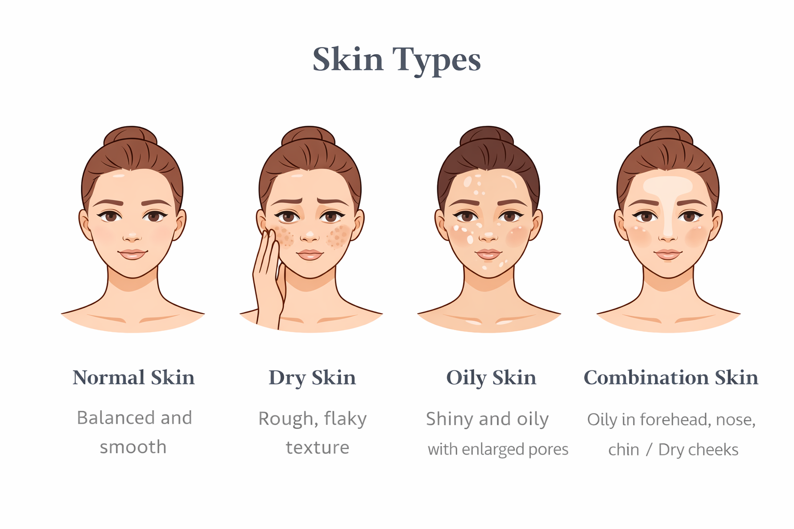
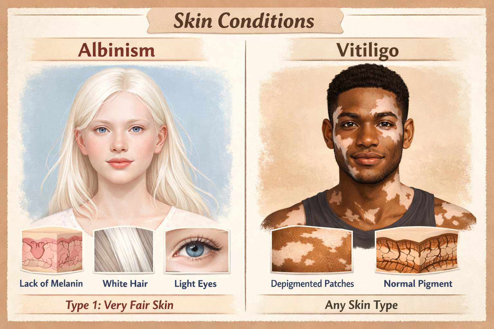

.png)
Know your skin type
Understanding your skin type helps you choose the right products and build a routine that works for your skin's unique needs.

Normal Skin
Balanced skin that is neither too oily nor too dry.
- Smooth texture
- Few visible imperfections
- Small pores
Dry Skin
Skin that feels tight, rough or flaky due to lack of moisture.
- Flaky patches
- Dull appearance
- Needs deep hydration
Oily Skin
Skin that produces too much sebum, especially in the forehead, nose and chin area.
- Shiny appearance
- Enlarged pores
- More prone to breakouts
Combination Skin
A mix of oily and dry areas on the face.
- Oily forehead/nose
- Dry cheeks
- Requires balance
Sensitive Skin
Skin that reacts easily to products or changes around the environment.
- Redness
- Irritation or itching
- Reacts to harsh ingredients
Special Skin Needs (Inclusive Care)

Skin Syntax believes that skincare should be inclusive and able to be accessed by everyone.
Our products are designed to be suitable for people with different skin conditions and visible skin differences, just like individuals with albinism and vitiligo .
We understand that these conditions need gentle care and strong skin protection. That is why our products focus on:
- Gentle, non-irritating formulas
- Strong hydration to protect sensitive skin
- Sun protection support for skin that is more sensitive to UV exposure
- Soothing ingredients that help maintain skin comfort and health
Recommended focus products:
- SPF sunscreen(very important daily protection)
- Hydrating moisturisers
- Gentle cleansers
- Soothing toners with aloe vera or green tea